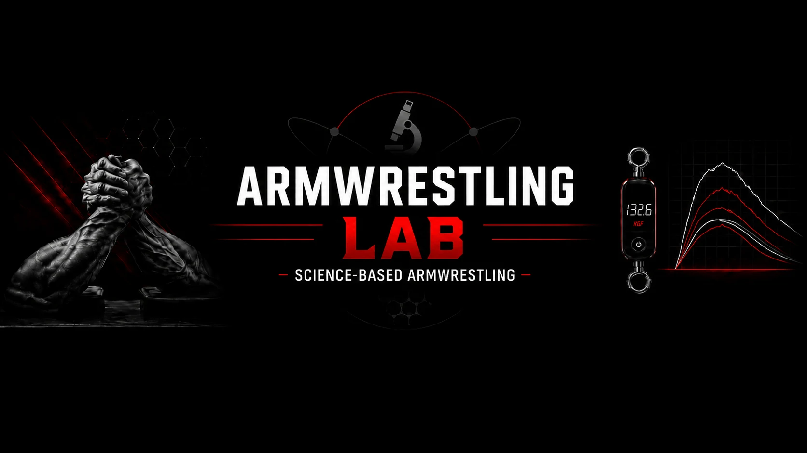

ABOUT / ARMWRESTLING LAB
Ciekawość. Dowody.
Lepsze pytanie.
Armwrestling LAB łączy pytania ze stołu z badaniami siły, ścięgien, żywienia i pomiaru. Ta biblioteka zamienia wybrane filmy kanału i ich raporty źródłowe w artykuły, które możesz przeczytać, sprawdzić i do których możesz wrócić.

Jak powstają artykuły
Zaczynamy od konkretnego pytania
Każdy artykuł opiera się na dostarczonej transkrypcji filmu. Powiązane raporty PDF i publikacje dają kontekst naukowy. Demonstracji ćwiczeń, których nie da się rzetelnie ocenić z tekstu, nie zamieniamy w instruktaże.
Oddzielamy wynik od interpretacji
Dane raportowane, przykłady obliczeniowe i schematy pojęciowe są osobno oznaczone. Doświadczenie osobiste nie jest przedstawiane jako badanie kontrolowane, a wyniki z kolan czy modeli tkanek jako sprawdzone protokoły dla nadgarstka.
Pokazujemy źródła
Numerowane referencje łączą tekst z publikacjami. Dostarczone PDF-y są dostępne przy odpowiednich artykułach. Grafiki opisują badaną grupę, jednostki i ograniczenia.
Synteza redakcyjna, nie transkrypcja
Artykuły zestawiają materiał kanału z dowodami, zamiast powtarzać każde twierdzenie z narracji. Zachowują niepewność tam, gdzie dane nie wykazują przyczynowości, uniwersalnej dawki lub bezpiecznego obciążenia danej osoby. Daty wydań artykułów nie są datami publikacji filmów.
Pytania i poprawki
Pytanie merytoryczne możesz zostawić w dyskusji pod powiązanym filmem. Podaj tytuł artykułu i referencję lub grafikę. Część odnośników prowadzi do wyraźnie oznaczonego wyszukiwania, ponieważ archiwum nie zawierało wszystkich adresów filmów.
Czytaj w swoim języku
To wydanie zawiera pełną wersję polską i angielską. Poniższe dodatkowe wersje są planowane, a nie opublikowane: